레진코믹스 추천 인기 순위 TOP 30
레진코믹스에서 지금 연재 중인 작품을 레진코믹스 공식 인기 순위 순서로 모았어요. 네이버웹툰·카카오웹툰·레진코믹스에서 조건에 맞는 작품 439개 중 인기 순으로 30개를 골랐어요. 인기 TOP 3: 오류탐구영역, 킬러가 사랑에 빠졌을 때, 남고 소년
2026-11-12 기준 · 성인 작품 제외
내 취향으로 더 좁혀서 추천받기 →-
1
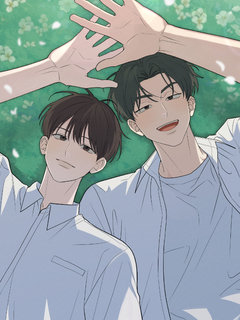
레진코믹스오류탐구영역
중학생 때까지 전교 1등을 놓쳐본 적 없는 '오승표'는 고등학교 진학 후 '류재민'에게 전교 1등 자리를 뺏기고 만다. 전교 1등은 류재민, 전교 2등은 오승표. 아무리 열심히 공부해도 이 순서를 뒤집을 수가 없다. 태어나 처음으로 느끼는 열등감에 승표는 저도 모르게 재민을 계속 지켜…
학원물혐관배틀연애BL레진코믹스에서 보기 → -
2레진코믹스
킬러가 사랑에 빠졌을 때
[속보] 프로 킬러 주태만이 국내 최고의 배우 강다혁에게 반해버렸다! 극강의 훈련과 교육 그리고 잔인한 고문도 견뎌낸 프로 킬러 주태만, 그러나 어째서인지 강다혁의 다정함에는 손쉽게 무너지는데...? ㅡ 프로킬러 NN년차, 설마 이게 바로 사랑? 그러면 이럴 때는 어떻게 해야 하지?
직진수헌신수능력수얼빠수미남공레진코믹스에서 보기 → -
3
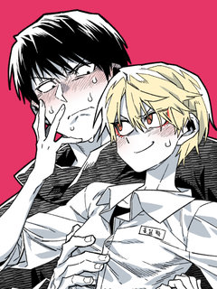
레진코믹스남고 소년
대문 남고의 유일한 홍일점인 '홍일탁'. 물론 이름과 별명과는 다르게 남자다. 왜소한 체격과 곱상한 외모 덕분에 찐따부터 일진에 이르기까지 자신을 무시하기에 이르고 교내 서열 꼴찌에 머무르고 있었다. 과거, 중학교 2학년까지만 해도 유명한 일진이었던 일탁은 자신의 한 문제로 인해 먹이…
BL개그성장물숏드라마스낵타임레진코믹스에서 보기 → -
4
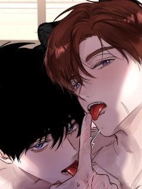
레진코믹스소꿉친구의 가이드가 되었다 [연재]
하룻밤으로 D급 가이드에서 S급 가이드가 되었다. 만년 D급 가이드 조이현. 쌍둥이 소꿉친구들이자 A급 에스퍼인 정한세와 정한결의 그늘에 가려져 살다가 단 하룻밤으로 S급 가이드가 되다?!
순진수연하남능력수가이드버스대형견남레진코믹스에서 보기 → -
5
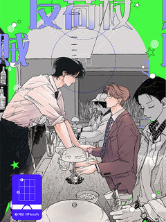
레진코믹스적반하장의 허슬플레이
자신의 모교가 있는 지방으로 전근을 간 '강예솔'은 '스플리터'라는 바의 사장 '정한림'을 만난다. 바에서 정신없이 술을 마신 예솔은 다음 날 아침 한림의 집에서 깨어나고 자신이 남자와 잤다는(?) 사실에 기겁하며 도망친다. 무척 중요한 USB를 잃어버린 걸 깨달은 예솔은 어쩔 수 없…
능글수무심공미남공미남수재회레진코믹스에서 보기 → -
6레진코믹스
늑대가 날 책임지겠대 [연재]
어릴 적 수인에게 강제로 마킹 당한 유재이는 발정기와 페로몬 때문에 늘 괴로워하며 살아왔다. 성인이 된 어느날, 한 마리 늑대 수인— 이건우가 갑자기 나타나 자신이 모든 걸 책임지겠다며 유재이를 찾아온다. 하지만 유재이는 단번에 알아본다. 그가 바로 자신의 꿈속에 계속 나타나 자신을…
미인수대형견남기억상실덩치케미인외존재레진코믹스에서 보기 → -
7
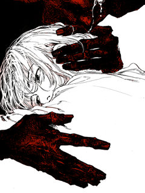
-
8
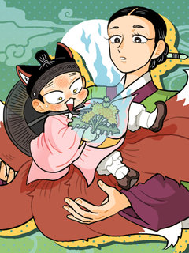
레진코믹스봄불은 여우불이어라
[5주 연재 후 1주 휴재] 인간 신부 '옥난'의 호감과 행복을 얻어야만 구미호가 될 수 있는 팔미호 '호연'. 그러나 자신을 덤덤하게만 대하는 하는 옥난의 태도에 호연은 애가 닳는다. 과연 호연은 옥난의 사랑으로 구미호가 되는데 성공할 수 있을까..?
순정남무심녀동양인외존재동거레진코믹스에서 보기 → -
9
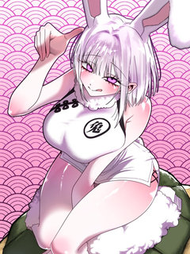
레진코믹스거북이는 잠자는 토끼를 지나칠 수 없어!
거북이는 토끼와의 달리기 시합에서 승리하고, 10년을 숨겼던 마음을 고백하기로 결심한다! 거북이는 최선을 다해 달리지만 다가올 미래는 참혹 그 자체?!
개그드라마병맛판타지레진코믹스에서 보기 → -
10레진코믹스
나 좀 바라봐 줘 [연재]
사생활이 문란하다고 소문난 현우. 이런 현우와의 하룻밤으로 결혼까지 하게 된 하영. 실수인 듯하지만 사실 하영은 주 씨 집안의 비밀을 파헤치려는 계획이 있고… 이런 계획을 알고 있는 현우지만 속으로는 하영을 좋아해 비밀을 지켜주는데, 그러니까... \\
원나잇로맨스레진코믹스에서 보기 → -
11
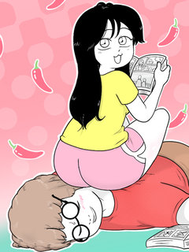
-
12
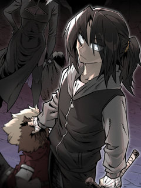
레진코믹스게임은 살인이다
정체불명의 가상현실 게임 '케이지' 자신과 인연이 있던 스승이자 어린아이인 <요를>을 GM인 유타기의 손에 잃고나서 유타기를 진심으로 죽이기 위한 방법을 찾기 위해 강해질 방법을 찾게 되는데... <내게 게임은 살인이다>의 정식 후속작.
게임소년물SF성장물판타지레진코믹스에서 보기 → -
13
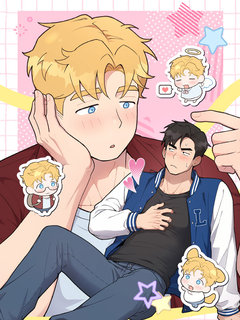
레진코믹스나의 천사를 찾아서
첫눈에 반해 결혼을 약속한 천사 같았던 옆집 여자아이. 10년 뒤 거구의 남성이 되어 돌아오다…!? 미국의 한 작은 마을에서 살고 있는 한국계 미국인 유진 킴. 10년 만에 옆집으로 돌아온 첫사랑 모건 라일리와 재회하지만, 눈앞에 나타난 건 거구의 금발 남성이 된 모건. 유진은 자신이…
떡대수상처공평범공키작공재회레진코믹스에서 보기 → -
14
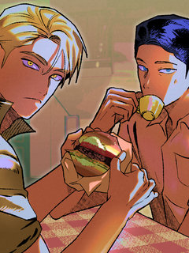
레진코믹스지상낙원의 부적응자
플로리다에 머무른지 3년째인데도 영어를 못 하는 괴짜 이탈리안 살보 비갈리. 그는 세계적인 작가임에도 호텔 대신 플로리다의 낡은 모텔에서 누군가를 기다리며 말라가고 있다. 고향 시칠리를 그리워하던 살보는 순전히 고향의 억양을 쓴단 이유로 처음 만난 건달 청소부 벤을 자신의 조수 겸 영…
까칠수혐관연상수성장물연하남레진코믹스에서 보기 → -
15
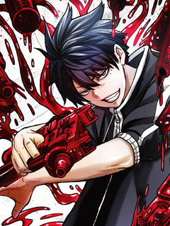
레진코믹스도원암귀
‘오니’가 ‘모모타로’를 퇴치한다고?! “너는 오니의 피를 이어받았다.” ‘모모타로’의 갑작스러운 습격으로 인해 자신이 ‘오니’라는 사실을 알게 된 주인공, 이치노세 시키. 자신의 피에 깃들어 있던 ‘오니’와 만난 주인공의 숙명은―. 그 흉폭성과 자아의 붕괴, 오니의 피가 끓어오른다!…
소년물판타지드라마레진코믹스에서 보기 → -
16
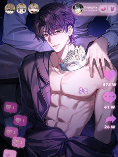
레진코믹스몸캠 BJ의 이중생활 [연재]
본부장님, 아니 Daylightx씨, 전 당신의 비밀을 전부 알고 있어요- 밤에는 백만 팔로워를 가진 벗방 스트리머 Daylightx로, 낮에는 평범한 회사원 임성현으로 이중생활을 하던 도중, 누군가 내 정체를 알아챘다.
능력공까칠수오해/착각능력수현대물레진코믹스에서 보기 → -
17
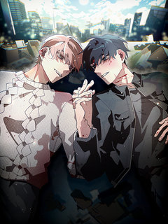
레진코믹스11번째 수학여행 [연재]
[4회 연재 후 1회 정기 휴재] 이능력을 가진 학생들만이 다니는 신해 고등학교의 2학년 가준과 선우. 수학여행을 가기 위해 잠깐 정차한 휴게소에서 버스를 놓친 두 사람은 우여곡절 끝에 다시 버스에 올라타고, 꺼림칙한 기분으로 수련원으로 향한다. 드디어 도착한 수련원에서 마주한 건 수…
구원서사무심수대형견남능력수강수레진코믹스에서 보기 → -
18
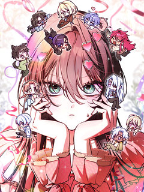
레진코믹스두근두근 공략기 [연재]
하렘이야말로 미연시의 메인 콘텐츠다! 밤새 미뤄뒀던 게임을 하다 잠이 든 다은은 다른 세계에서 처음 보는 인물이 되어 눈을 뜬다. 온통 처음 보는 것들과 마주하고 당황한 것도 잠시, 이곳이 ‘미연시’ 게임 속임을 파악하고 ‘디아나 블량쉐’가 되어 주위 캐릭터들을 공략하기 시작한다. 디…
능력녀회귀역하렘게임로판레진코믹스에서 보기 → -
19
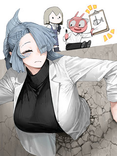
-
20
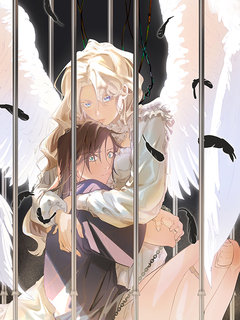
레진코믹스인조체온 36.7도 [연재]
감옥에서 태어난 엘은 어머니가 말하던 '까마귀'가 어떤 모습인지 늘 보고 싶어 했다. 엘이 비밀리에 처형되기 직전의 그날, 감옥에 인공지능 ‘제인(Jane)’이 시범 투입되었다. 제인의 데이터베이스에는 바깥세상의 모든 것이 들어 있었다. 그렇게 엘은 제인에게 특별한 감정을 느끼게 된다…
GL레진코믹스에서 보기 → -
21
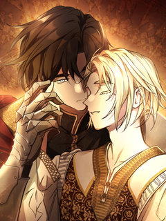
-
22
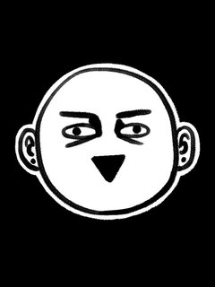
-
23
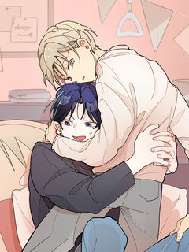
레진코믹스원룸 조교님 [개정판]
2학년으로 복학한 우윤은 묘한 매력의 행정실 조교님 진형을 만나고, 냅다 고백한 결과 원룸에서 동거를 시작한다! 동거 일주일이 되던 날, 우윤의 농도 깊은 키스에 스킨십에 대한 남다른 환상이 있다며 기다려 달라는 진형. 대체 그 환상이 뭔데!? 그들은 모든 환상과 망상을 딛고 무사히…
미남수연상수미인공동거캠퍼스레진코믹스에서 보기 → -
24
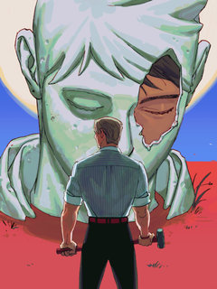
레진코믹스불멸의 날들
오랜 연구 끝에 인류는 더이상 죽지도 다치지도 않게 된다. 하지만 언제나 돌연변이는 존재하는 법. 죽을 수 있는 존재로 태어난 '멸'은 불사의 사람들 사이에서 갖은 고생을 하며 살아간다. 외로이 고군분투를 하며 지내던 때, 멸은 자신과 같은 돌연변이 해결사 '필'을 만나게 된다. 그리…
액션레진코믹스에서 보기 → -
25
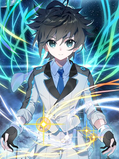
레진코믹스엘피스 전기: 더 라스트 [연재]
엘피스 연방 과학연구원 소속 탐사대 대원들은 신비한 알을 발견한다. 소울 몬스터의 알이라고 생각한 알에서는 한 아이가 태어나는데… 그 아이의 스피릿은 블루그래스. 한편, 레온과 셀레나는 기억을 잃은 채 서로 다른 곳에서 깨어나게 된다. 과학의 발전과 함께 전혀 다른 세상이 되어버린 엘…
판타지레진코믹스에서 보기 → -
26레진코믹스
감시남편을 파멸시킬 때까지 [연재]
2년 전 교통사고로 부모를 잃고, 휠체어에 의지해 살아가는 이로하. 사랑하는 남편 아오토와 가정부의 도움으로 평온한 나날을 보내던 그녀는 언젠가 다시 걸을 수 있을 날을 꿈꾸며 몰래 재활을 이어간다. 그러던 어느 날, 스스로 일어선 그녀가 마주한 건 기적이 아닌 '진실'이었다. 사랑이…
상처녀순진녀소심녀후회물복수극레진코믹스에서 보기 → -
27
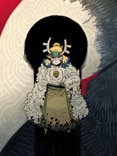
-
28레진코믹스
나는 최약체 드래곤 테이머 [연재]
드래곤이 최강자인 세상에 들어와 살게 된 지 3년째. 직업 각성을 했더니 히든 직업인 드래곤 테이머가 나왔다?! 다들 쓸모 없다며 비웃었지만, 세상은 아직 모른다. 이딴게 왜, 전설인지.
성장물판타지레진코믹스에서 보기 → -
29
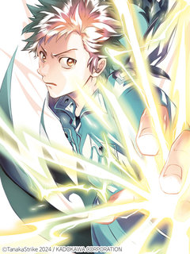
레진코믹스서뱀프 (SERVAMP)
코믹한 열혈! 흡혈귀×주종계약 배틀 액션―!! 고등학교 1학년인 주인공 시로타 마히루는 길에서 고양이 한 마리를 줍는데, 그 정체는 다름 아닌 「SERVAMP」라는 하인 흡혈귀였다! 게다가 「귀찮아――」 가 말버릇인 의욕 제로의 성격!! 계약에 의해 쿠로의 이브가 된 마히루는 흡혈귀끼…
뱀파이어이능력액션판타지레진코믹스에서 보기 → -
30
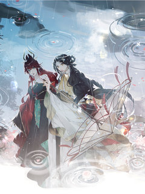
레진코믹스얽힌 가지 [연재]
스물여섯, 병으로 이른 죽음을 맞은 강채연. 다시 눈을 떠보니 곧 멸망할 나라의 황후로 빙의했다! 이번에는 일찍 죽지 않고 살아남기 위해, 나라의 파멸을 막기 위해— 훗날 나라를 핏빛으로 물들이고 끝내 자신까지 죽일 대악역 공주를 교화시켜 바르게 키워야 한다. 공주의 올케로 빙의한 강…
궁중로맨스동양시대물GL레진코믹스에서 보기 →